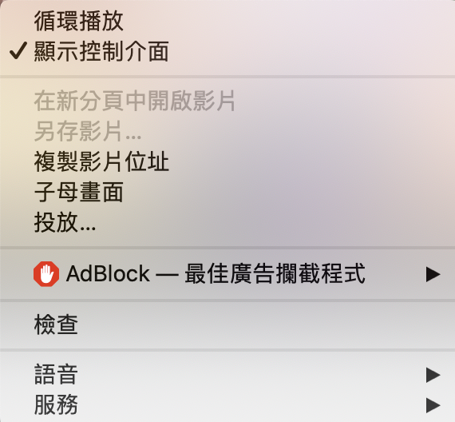
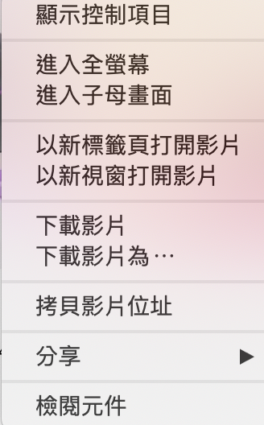

WELCOME TO VIDEO
rouze
vtuber
back to home
非yt影片播放方法
請將瀏覽器更新至最新版，並在影片上方按右鍵，點選顯示控制介面or顯示控制項目
chrome

safari

這是一首傳遞美好正能量的歌
初音未來-三個笨蛋【中文字幕】Triple baka 驫麤
nico本家
↓yt連結 去找吧！我把一切密寶都放在那了！
Copyright©2020, ERIC. All rights reserved.
請將瀏覽器更新至最新版，建議使用chromium瀏覽
 Copyright©2020, ERIC. All rights reserved.
Copyright©2020, ERIC. All rights reserved.